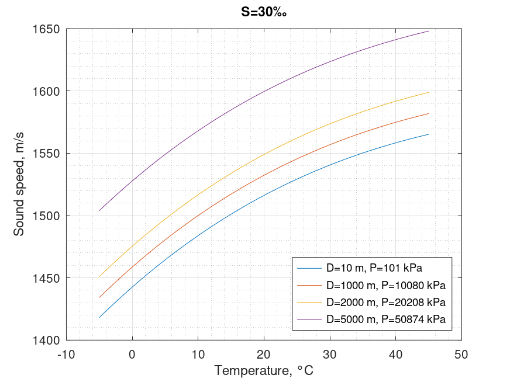

Sound speed in sea. NPL equation
Mathematical definition
$$\boxed{\begin{array}{l} C\left( {T,S,D} \right) = 1402.5 + 5T - 5.44 \times {10^{ - 2}}{T^2} + 2.1 \times {10^{ - 4}}{T^3}\\ + 1.33S - 1.23 \times {10^{ - 2}}ST + 8.7 \times {10^{ - 5}}S{T^2}\\ + 1.56 \times {10^{ - 2}}D + 2.55 \times {10^{ - 7}}{Z^2} - 7.3 \times {10^{ - 12}}{Z^3}\\ + 1.2 \times {10^{ - 6}}Z\left( {L - 45} \right) - 9.5 \times {10^{ - 13}}T{Z^3}\\ + 3 \times {10^{ - 7}}{T^2}Z + 1.43 \times {10^{ - 5}}SZ \end{array}}$$
| Notation | Description | Units | Conversion | Limits |
|---|---|---|---|---|
| $C$ | sound speed | $m/s$ | ||
| $T$ | temperature | $^{\circ}C$ | $-1 < T < 30$ | |
| $S$ | salinity | $‰$ | $0 < S < 42$ | |
| $D$ | depth | $m$ | $0 < D < 12000$ |
Octave/Matlab implementation
function C = sound_speed_sea_npl(T,S,D,L)
% Arguments
% T: temperature \ degree Celsius \ -1 < T < 30
% S: salinity \ ppt \ 0 < S < 42
% D: depth \ m \ 0 < D < 12000
% L: latitude \ degree \ -90 < L < 90
% Results
% C: speed of sound in seawater \ m/s
C = 1402.5 + 5*T - (5.44e-2)*(T.^2) + (2.1e-4)*(T.^3) ...
+ 1.33*S - (1.23e-2)*S.*T + (8.7e-5)*S.*(T.^2) ...
+ (1.56e-2)*D + (2.55e-7)*(D.^2) - (7.3e-12)*(D.^3) ...
+ (1.2e-6)*D.*(L-45) - (9.5e-13)*T.*(D.^3) + (3e-7)*(T.^2).*D ...
+ (1.43e-5)*S.*D;
end
Computational examples

| $D$\$T$ | $0°\text{C}$ | $10°\text{C}$ | $20°\text{C}$ | $30°\text{C}$ | $40°\text{C}$ |
|---|---|---|---|---|---|
| $10\ m$ | $1442.56$ | $1483.90$ | $1516.14$ | $1540.55$ | $1558.38$ |
| $1000\ m$ | $1458.62$ | $1499.98$ | $1532.31$ | $1556.85$ | $1574.88$ |
| $2000\ m$ | $1475.31$ | $1516.64$ | $1548.98$ | $1573.61$ | $1591.78$ |
| $5000\ m$ | $1527.74$ | $1568.04$ | $1599.55$ | $1623.51$ | $1641.20$ |
References
- Leroy, Claude C; Robinson, Stephen P; Goldsmith, Mike J, "A new equation for the accurate calculation of sound speed in all oceans", 2008